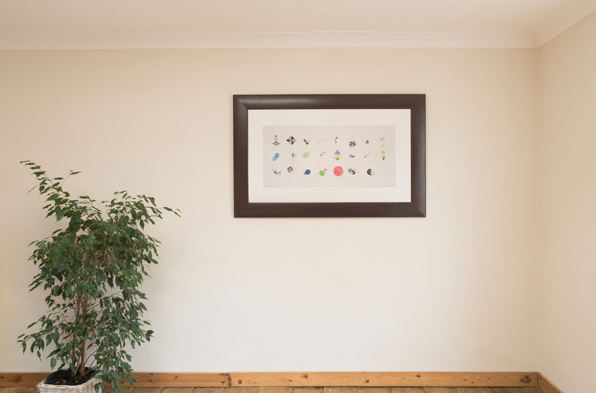
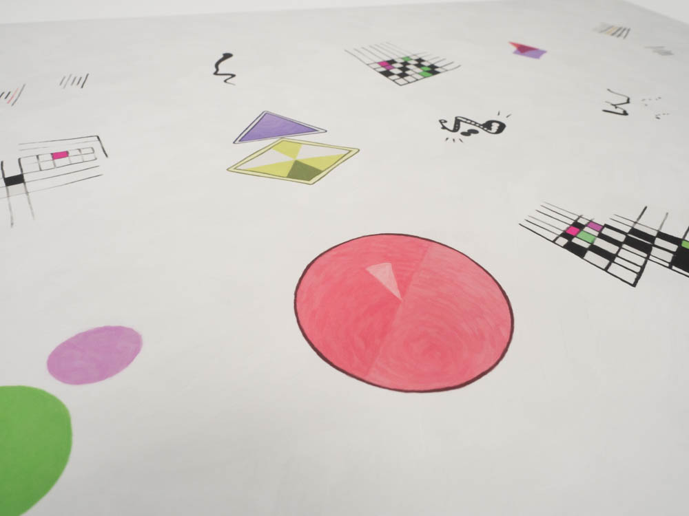

All about DNArtwork
A DNArtwork is an artistic representation of your DNA. Like your DNA it is unique to you. Like DNA, the artworks of two related people will be alike but not identical.

DNArtworks look like art, with fine brush details and a hand painted feel.

If you’re ready to get your own DNArtwork, start here. For more info read on, and if you have a question that I haven’t answered then please mail me on bernie@berniecode.com.
How do you get my DNA?
In order to use this service, you need a DNA test. We support a few different providers of DNA tests, if you haven’t already been tested you’ll be guided through the process of choosing a DNA testing service.
How can you tell how related people are from their DNArtworks?
Each artwork has 23 shapes, and close relatives will share around half of their shapes, while totally unrelated people will share few or no shapes.
Does this site make money?
The service is offered free, and you’re entirely welcome to use it for free. I categorically don’t do anything dodgy like selling your information. There are exactly three ways that I make money through this site, and if they combine to pay my hosting costs I’ll be a happy bunny.
I have a donations page.
To use this site you need a DNA test. If you purchase this test through the link on this site, you pay no extra but I get an affiliate fee of around 5-10% of the purchase price.
If you choose to order a print of your artwork through our printing partner, I get an affiliate fee; again around 5-10% of the purchase price. Of course you're welcome to download your artwork and print it yourself.
After covering my hosting fees, any extra money will be put towards taking my wife out for a nice dinner as compensation for all those evening and weekend hours I spend making this site instead of doing laundry.
Why are you doing this if it’s not to make money?
I built this site because someone had to, and I could :o)
How do you process my genetic data and are there privacy risks?
As with any site that processes your genetic data there are privacy concerns that you should be aware of. The best way to understand the risks is to understand how I process your genetic information. This is a non-technical summary, there’s a techie version further down the page.
In order to produce your artwork, you need a DNA test, which you get from another company. Once your DNA test is complete you can download a file containing your DNA - basically a massive spreadsheet with half a million or so rows, each one carrying information on a specific genetic marker. This file is analysed by a computer program running on your computer which chooses 23 of these markers to create your artwork from. Only these 23 markers are transmitted over the Internet or stored permanently - most of your genetic information never leaves your computer. This way, your genetic information is not accessible even to me or to any hackers who might break into my computers later.
There are two privacy concerns that people commonly have about their genetic data. Firstly, it may reveal sensitive information about you, such as whether you have certain inherited medical conditions. I believe that this is not a concern for this product:
- 99.99% of your genetic information is discarded and not used to generate the artwork, so any given sensitive bit of information is very unlikely to be used in your artwork
- It’s not clear from looking at an artwork what genetic information is used to generate it.
The second privacy with genetic data is that it can reveal how related two people are. If two people are more, or less, related than some people are aware, it can be embarrassing. This is more of a concern for this product, since it is deliberately designed so that, most of the time, people who are more related to each other will have more similar artworks. Two important things to bear in mind here. Firstly this artwork is not a paternity test - purely by chance, two related people may have very different artworks, or two unrelated people may have very similar artworks. Secondly, after generating the artworks on this site, it’s your choice whether to show them to anybody else.
I’m a massive nerd, what exactly are you doing technically?
Excellent, I'm glad you asked!
I've written up a technical explanation of the analysis process works. It's geeky. You have been warned!
Data protection: how do I see what data you have one me or delete my data from your service?
I don't store anything so there's nothing to see or delete. When you generate your artwork, once you close the window there is no record of it left on my site. If you share a link to your artwork, all the information about your artwork is stored in the link itself. Just like sending an email, once you've given someone this link, you can't take it away. If you want to exert more control you could always download the artwork image and upload it to a photo sharing service like facebook. This would allow you to delete it later.